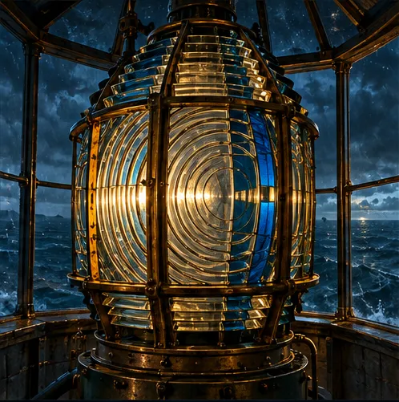
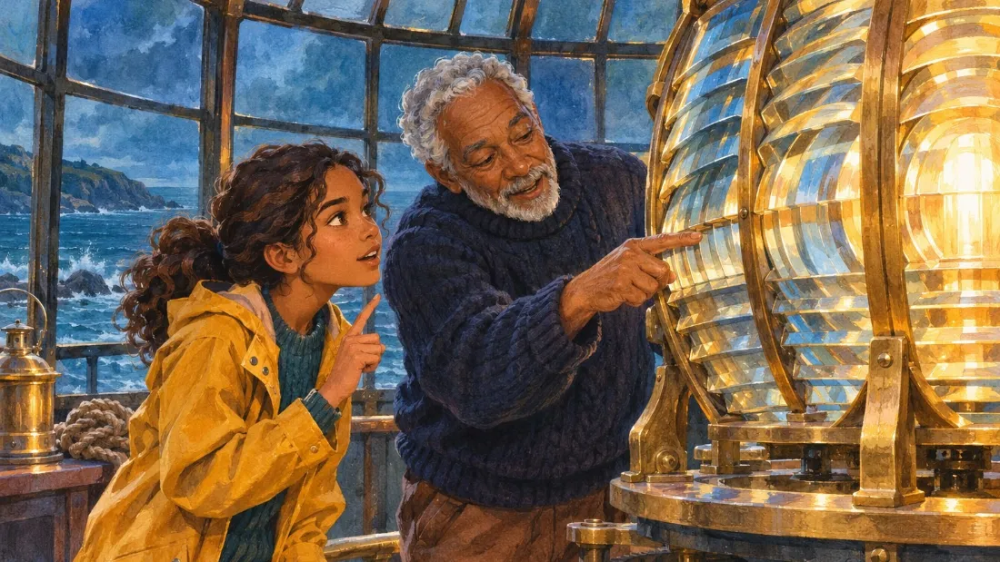
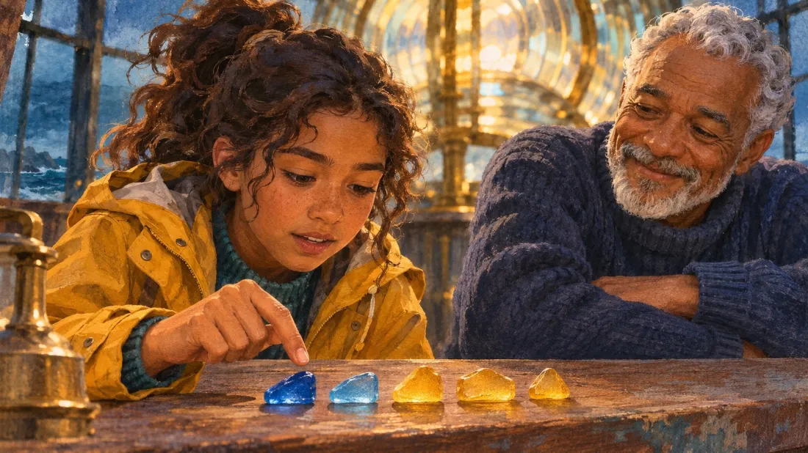
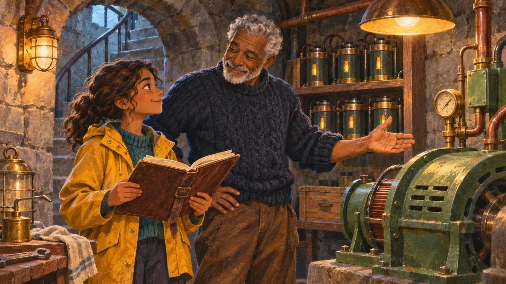
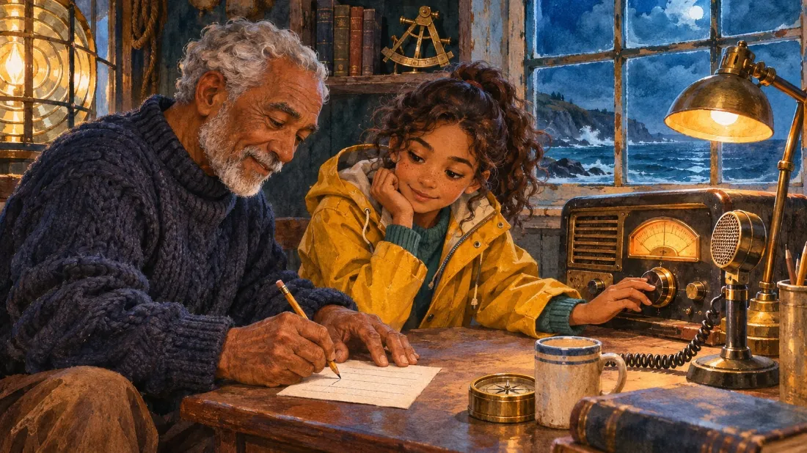
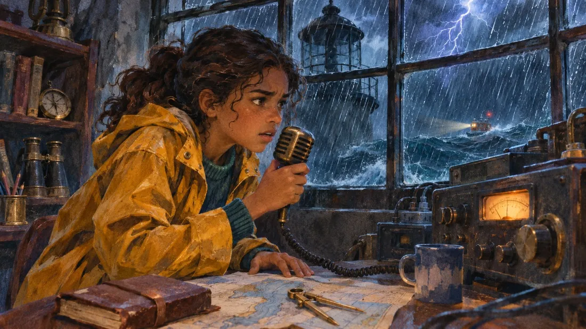
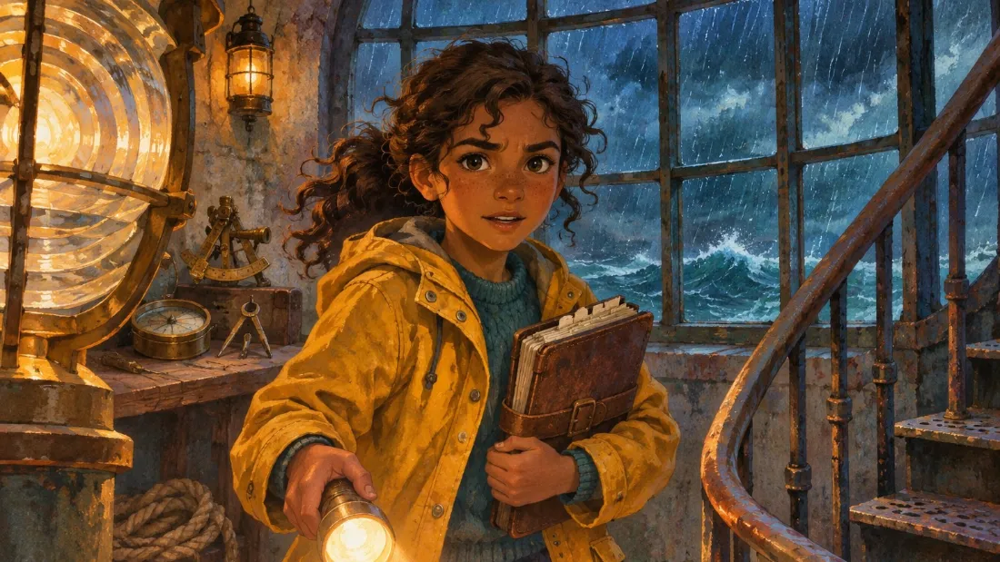

The idea came from conversations with my middle school students years ago. I designed the learning sequence, practice, and feedback, built the playable prototype with AI tools, and created a two-day classroom unit to go with it. It hasn’t been tested with students yet, but it’s what I’d want to try with them if I were back in the classroom.
Ratios and rates in a two-day unit
It’s built for Grade 6, early in the ratio unit, after ratio tables and before percents. It covers Common Core 6.RP.A.1, 6.RP.A.2, 6.RP.A.3a, and 6.RP.A.3b over two days on a block schedule, or four 45-minute periods. The game runs in the browser on Chromebooks and iPads, with no logins or downloads.
Play the escape room
A few choices behind the game
- Give learners something to work with.Learners build a ratio with tiles, extend a ratio table, and use a radio log to figure out how many beeps happen in one minute. I wanted them to see and work with the math rather than just entering an answer (they do this, too!).
- Make it easy to ask for help.Every room has an optional three-part practice and three hints that get more specific along the way. There’s no penalty for using them.
- Ask how they know it works.In the signal gallery, learners use their logbook clues to set the dials and test the signal. Then they use their own numbers to finish a sentence explaining why it works.
- Intentional framing and designated exploration.The Keeper’s Logbook introduces the vocabulary and mission on Day 1, so students have a chance to get familiar with both before entering the escape room.
- Design for pairs finishing at different times.Each lesson is designed to fit one class period. Early finishers can start designing their own room. Those who need longer can pick up where they left off at the start of the next lesson. The game saves progress in the browser, and a five-letter room code lets a pair keep going on a different Chromebook or iPad.
- Have a plan for who might miss out.Driver and Navigator roles give both partners a job. Paper Rooms offer another way to take part for students who can’t use the game, and there’s a make-up plan for anyone who’s absent. Teacher notes also suggest adaptations for Grades 5 and 7.
- Save time to talk about their thinking.For Lesson 3, I’ve planned a discussion where students compare strategies and work through possible mistakes, such as “14 flashes,” rather than recap the story. Once I’ve tried it with a class, I’d use examples from their work to guide that conversation.
Where each goal is taught, practiced, and checked
I created this map to check that each learning goal had a place in the lessons, time for practice, and a way for students to show what they understood. It follows the parts of Common Core 6.RP.A.3 across both days, from the story on Day 1 to the Lantern Check at the end of Day 2.
Not covered: plotting ratio pairs (part of 3a), percents (3c), and unit conversions (3d).
Inside each room
Built on Common Core 6.RP.A.3 ↗, mainly 3a (equivalent ratios and ratio tables) and 3b (unit rates). Each room pairs one part of the standard with a hands-on choice, an optional practice round, three hints, and feedback for each kind of mistake.

- What is the ratio of blue to gold? How many lights are in one group of that ratio?
- The lens has 20 spots. How many groups of 5 is that?
- Four groups of 2 blue and 3 gold is how many of each? The 4 stuck gold panels count too.
In every room, learners can type answers instead of turning the dials.
Two days at Gull Point
Here’s how a teacher would bring the escape room into class. I modeled the teacher guide on the Engineering is Elementary guides from the Museum of Science, Boston: a story sets up the problem, partners practice the tools, then they put those tools to work and talk about what they learned.
The Keeper’s Logbook
An illustrated short story told across eight slides. Sixth grader Mira visits her grandfather Pop, the keeper of Gull Point Light. As he shows her the lens, his logbook, the generator, and the radio, students hear each math word as it comes up. Then a storm knocks out the light, and students become Mira’s crew. Like the storybooks in Engineering is Elementary, it sets up the problem, but it’s written with sixth graders in mind.
- Scene 1Gull PointMira meets the beacon her grandfather has kept for thirty years.beaconreef

Scene 2The Lantern RoomThe lens has its own pattern: 2 blue for every 3 gold.ratio
Scene 3Parts and the WholeFive pieces of sea glass show two ways to compare.part-to-partpart-to-whole- Scene 4The Keeper’s LogbookPop records every pattern that works.ratio tableequivalent ratios

Scene 5The Generator RoomPacks and flashes always stay in the same ratio.ratio table
Scene 6The Radio RoomBeeps per minute, sketched on two lines.rateunit ratedouble number line
Scene 7The StormLightning knocks out the light as a rescue boat heads for the reef.
Scene 8Mira’s Crew“She needed a crew. That’s where you come in.”
Take it to class
How I’d evaluate its impact
Before the escape room, learners answer two quick questions about lanterns. Afterward, they answer the same two questions with new numbers. Each time, they also say how sure they are. Comparing the rounds shows whether learners can use ratios and rates on their own, and whether their confidence matches their skill. In class, the after round is the Lantern Check in Lesson 3 (handout 3-3). Step through three sample learners below.
What the activity would track
The before-and-after check shows whether learners learned. Data from the escape room itself can help show where to improve it.